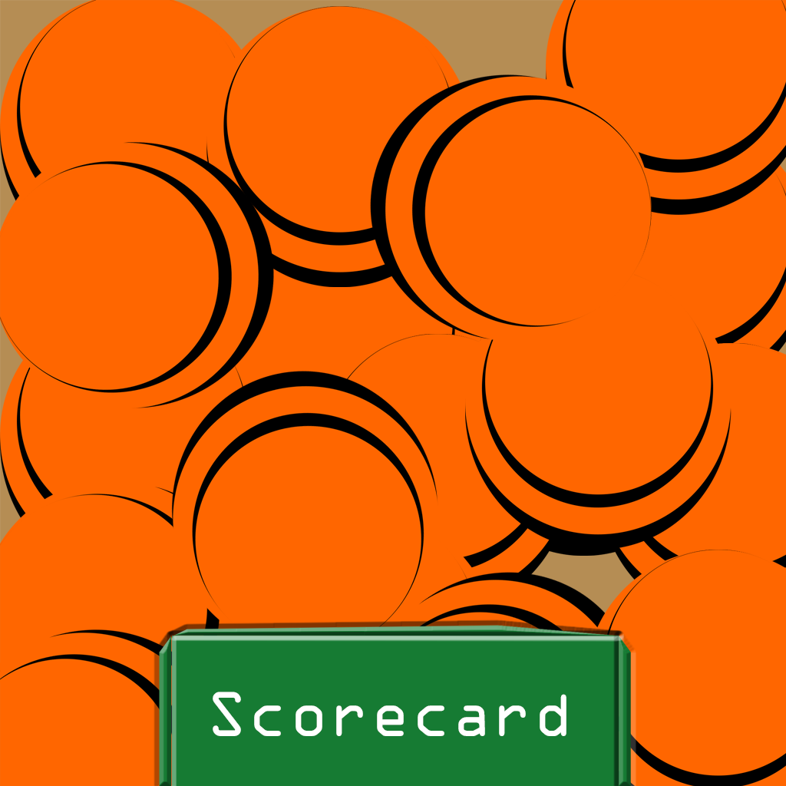
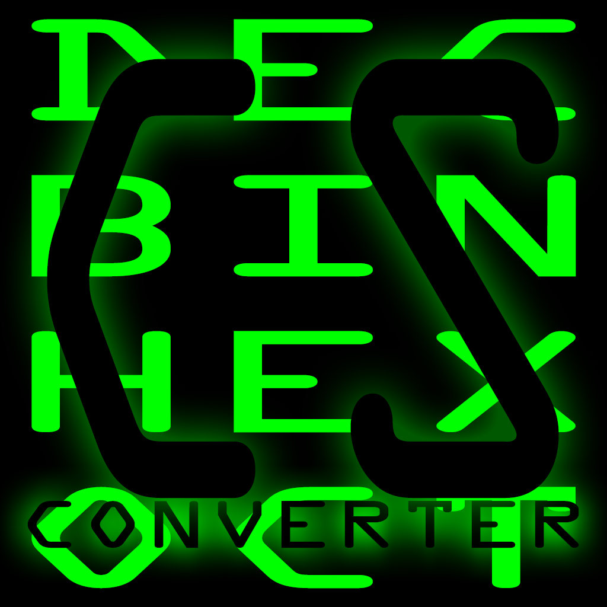
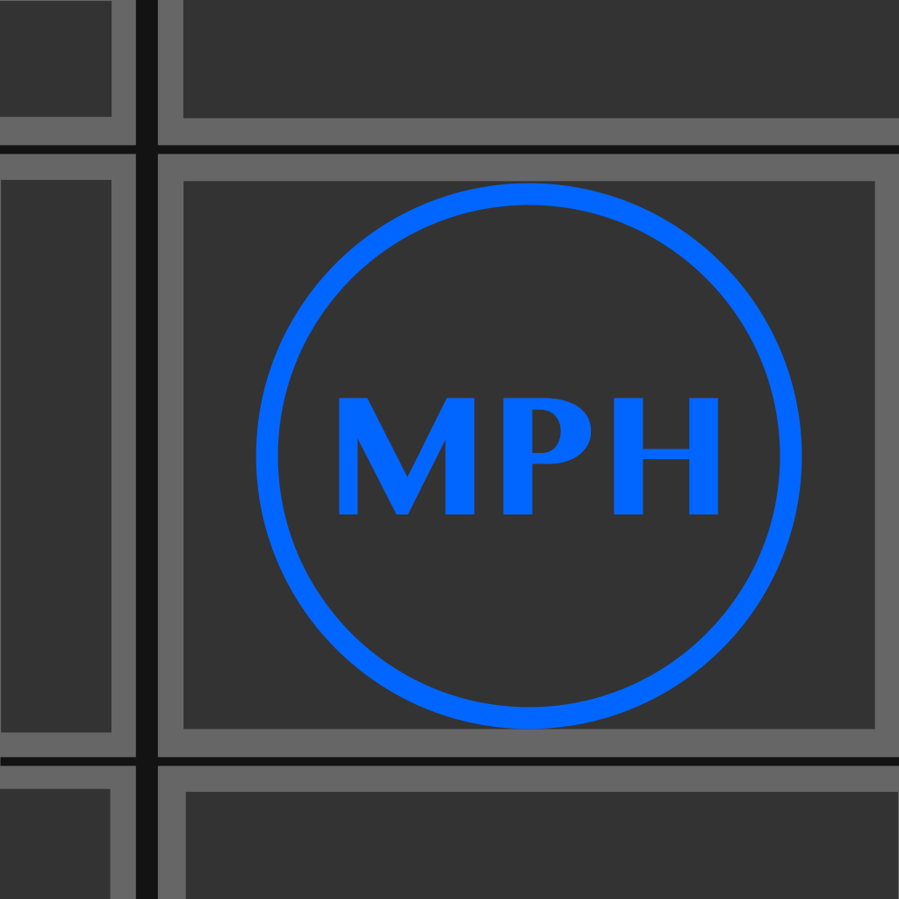

Putter FitterPublished: Support Page View at the App Store: Visit Now Language Used: C#, SQLite About: Putter Fitter helps a user select a putter based on their putting style. This works based on a decision tree. Depending on how they answer, their results are put into a priority queue with varying weights. The features with more influence will determine what putter will work best for them. |

Trap Shooting ScorecardPublished: Support Page View at the App Store: Visit Now Language Used: C#, SQLite About: Formed around an easy to use interface, Trapshooting Scorecard scores your round of trap for up to five shooters. After a round is complete, your scores are loaded into a database. Past rounds can then be viewed or deleted. Once a round is started, it can be paused and scores can be modified. |

Computer Science CalculatorPublished: Support Page View at the App Store: Visit Now Language Used: C# About: Computer Science Calculators Object Oriented Design allows for many different types of numeric conversions. Event handlers allow for fewer button presses to make the user interaction easier. Interface objects, such as scrollable views, are explored to allow for more simplicity while using it. |

Simple Speedometer Plus MapPublished: Support Page View at the App Store: Visit Now Language Used: C# About: Simple Speedometer and Map implements GPS data to effectively track a users speed. Using a custom algorithm, data points are selected to trace the users trip on a integrated map. A user can switch between the speedometer and map by rotating their device's screen. |
Holiday ClickerPublished: Support Page View at the App Store: Visit Now Language Used: C#, SQLite About: Holiday Clicker uses the current month and multiple threads to create a simple click based game. Each thread creates a new object and the user must tap that object or the game ends. Scores, and user settings are saved, and loaded when the app is launched. |